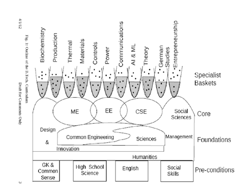

Items
Goals of IIT Mandi’s B. Tech. Programme
Historically, the IITs had a B.Tech. curriculum that was aimed at training experts in each specific branch for a career in research or engineering in the branch. The curriculum had a large and strong core covering all sub-areas of the branch in depth. There was also a substantial component in basic sciences and engineering fundamentals. The courses were carefully sequenced with the assumption that all students would take them in lock-step. With changes in society and the nature of technology, IIT Mandi has taken a fresh look at the B.Tech. curriculum.
The Students
The scheme of admission based on JEE ensures that students who join IIT for B.Tech. are highly intelligent and capable of hard work if sufficiently motivated. It does not ensure that they are passionate about engineering or the branch to which they have been admitted. Some do not have a strong aptitude for either. We see that IIT students after graduation go on to make their mark in a variety of ways, some far removed from their core B.Tech. branch. They may focus on technology as researchers, design engineers and professors. They may use their technical knowledge to complement other skills as technical managers, public administrators, in NGOs and policy think tanks, venture capital funds and so on. A few leave technology altogether to take up, for instance, school teaching in a village.The Technology Milieu
Globalization and the rapid march of science and technology have brought dramatic changes in the nature of the engineering profession. Increasingly, engineers are called upon to deliver technology to a wide variety of people in diverse socio-economic strata, cultures, geographies and political systems. Engineering is increasingly inter-disciplinary in nature, encompassing not only a range of engineering disciplines, but also management, sociology, linguistics, history and other non-engineering disciplines.The rapid advance of science and technology implies that much of the knowledge that a student acquires during B. Tech. has a useful lifetime of only a few years. Conversely, much of the knowledge that an engineer will use during his/her career of 40-50 years will be learnt only after graduation. Only some very basic principles can be expected to remain current over the next half a century.
The Desirable Outputs
Given the above changes, it is necessary to re-orient the B.Tech. curriculum. As an Indian Institute of Technology, it is our duty to train leaders for the growth of India with a strong technology focus. The necessary and desirable characteristics of our B.Tech. graduates are:- Self-motivated with a passion to do something useful
- The ability to learn quickly and devise innovative solutions
- The ability to work hard, in a focused and disciplined manner
- A solid foundation in basic principles and substantial practical hands-on experience
- Sufficient specific knowledge to be immediately productive
- The ability to communicate effectively and work with others
- The ability to communicate effectively and work with others.
Curriculum Overview
To achieve the above goals, we need a curriculum that is sufficiently flexible to the needs and aspirations of diverse students. For flexibility, it needs breadth. For students who want to master a field, it needs depth. Every student requires significant training in:- Basics of engineering
- Physical and life sciences
- Humanities, social sciences and management
- Fundamental principles of at least one engineering discipline
- Design and innovation
- Teamwork and communication
For students to explore their passion, there is a large set of electives. Over these, we superimpose formal and informal structures tailored to the typical paths that a student may take. These structures serve as guides for the students and help the outside world to evaluate each student's expertise. Given the diversity of student aspirations and the need to keep them motivated, we allow flexibility in sequencing of courses. It requires some adaptability on the part of the teachers. It also requires firmness as students realize that taking advantage of flexibility now may restrict their options in future semesters, and they clamor for timetables to be aligned to their desires.
A broad outline of the curriculum is shown in Fig. 1. Students who are admitted to IIT are assumed to satisfy the pre-conditions: Fluency in English, solid grounding in high school sciences and maths, broad general knowledge of the humanities, civic society, common-sense, and good social skills. Deficiencies in any of these must be addressed informally by the teachers in the curriculum or formally outside the curriculum.
The foundations of all B.Techs. are: Facility in design and innovation; strong understanding of common scientific and engineering principles and methods; and breadth of knowledge outside science and engineering i.e. in the humanities, social sciences and management.
Next is the core of knowledge in the student's chosen branch. This is kept to the bare minimum, with principles and techniques being learnt in theory courses, in labs or in practicums.
Finally, we have a large number of specialist baskets. Many of these are interdisciplinary. In each basket, the horizontal line divides the basic from the advanced courses.
The boundaries in the curriculum diagram have deliberately been drawn in a vague and overlapping manner. This is to emphasize the flexibility and the inherently inter-disciplinary nature of tomorrow's B.Tech. graduate.
Note: Fig. 1 shows the three B.Tech. disciplines that currently exist in IIT Mandi. Others can be added. The list of Specialist Baskets is only indicative, it is not intended to be exhaustive nor does it imply a commitment that they will be offered.
|  |
| Fig 1. Outline of the B.Tech Curriculum |
Sciences
This includes theory and experimental methods of physical and life sciences. Courses cover maths, physics, chemistry, biology, statistics and probability. Most courses are common to all students, but a few may be discipline-specific.Common Engineering
By including a wide range of courses, students get prepared for the inter-disciplinary world of technology. It facilitates branch change during the 1st or 2nd year. Courses cover product design and realisation, technical graphical communication, materials science and technology, mechanics of rigid bodies and continuum mechanics, thermodynamics, computers and computation, data structures, electrical circuits and devices, electronics, energy conversion, measurements and experimental methods.Distribution
The distribution of credits for each of the major components:- Institute Core Courses (88 Credits)
Sciences - 25
Common Engg - 42
Design & Innovation Practicum - 6
Humanities +Management- 13
Internship - 2 - Electives Courses (30 Credits)
Design & Innovation Practicum (includes final year project) – 12
Humanities Electives - 5
Free Electives - 13 - Discipline Core and Discipline Elective Courses (42 Credits)
Discipline core - 30
Discipline Electives – 12
Grand Total: 160-162 Credits
Note: Although the distribution adds up to 160, a range of 160-162 credits is specified for a B.Tech degree. This range accommodates the varying number of credits for different courses. Students are permitted to take extra credits beyond 162.
Ingredients
In our fresh design of the curriculum, some useful ingredients are:- A strong grounding in various areas like sciences that support engineering, basics of engineering, basics of the discipline, humanities and management.
To include all of these and still retain flexibility implies that the historically large discipline core must be drastically pruned. A very compact core for each discipline is defined. - Several practicums in which students work in teams to solve real problems following industrial engineering practices. The emphasis in a practicum is on use of common-sense and self-driven, just-in-time learning to devise a working solve to a problem within a fixed time frame. These start in the first few semesters to kindle students' interest in innovation and technology. In many cases, they precede the corresponding theory courses.
- Higher credit for practical work to reflect its importance in the learning process, 1 credit for 1.5-2 hours. Labs where students do routine measurements and observations on fixed setups will be replaced by labs where students are given problems and they devise the experimental setup required.
- A strong liberal arts component, including humanities, social sciences and management. It must be made clear to the students that some of this complements technology. At the same time, students must appreciate that a broad understanding of the liberal arts is essential for the well-rounded professional. Most students would experience something in this component almost every semester.
- To help students structure their courses, there are specialist baskets of 3-6 courses identified for each minor area. Each basket may rest on one or more foundations. A basket may have sequences within it, i.e. advanced courses may rest on basic courses in the basket. A student who completes a certain number of credits in a basket will have this reflected as a Minor on his/her transcript. (Credits that go to satisfy the requirements of the Major discipline cannot count towards a Minor.)
- The sequence in which courses are taken need not be from bottom to top in Fig. 1. By acquiring “lower” knowledge just-in-time on his/her own, a student can take a “higher” course early in his/her programme.
- Typically, core courses will be 3-4 credits and electives 3 credits.
Discussion
A key requirement for the success of this curriculum is that students understand the possibilities and the implications of their choices. This means that the faculty advisors should spend time to educate students about the curriculum, to encourage some of them to experiment with unusual sequences, and to help them recover if their choices turn out to be leading up a path that is wrong for them.
A flexible curriculum with fewer compulsory courses does not imply lower quality or less rigour. A student who is passionate about, say, mechanical engineering, will follow the ME Core by electing the basic courses in all the ME baskets (Thermal, Production, etc) and will top it off with the advanced courses in some of these baskets. Including the relevant courses in the common engineering component, s/he will graduate with over 100 credits of ME, i.e., about 30 ME courses. S/he will be as thorough in mechanical engineering as a student from any other University. That s/he has chosen many of these courses as electives rather than taking them out of compulsion will in fact serve as a greater incentive to excel in them.
In a traditional heavy-core curriculum, students who have got into a branch due to rank or social pressures lose interest. They are a drag on the class and become mediocre engineers. By minimizing the number of compulsory courses and offering a variety of baskets, it is likely that these students will find something about which they are passionate. They could become a pleasure to teach, and turn into very productive citizens in some field after graduation.
Students learn ‘how to learn’ by being given challenges in courses and being guided to crack them on their own initiative. A student who is given the challenge of devising his/her curriculum would surely become a leader in his/her chosen field of endeavor.